A CEO and a warehouse supervisor open the same beautiful dashboard. The CEO closes it after five seconds because she can’t see if the company is on track. The supervisor closes it too, because nothing tells him what to fix before the next truck leaves. The dashboard wasn’t badly designed. It was designed for nobody in particular.
Good report design starts with one rule: design follows the question your reader asks. A sales manager asks “who is winning?”, a finance manager asks “where did the money go?”, an operations lead asks “what needs action now?”. Different questions, different designs.
Three questions decide the style
- Who reads it? A board member, a team leader or an analyst reads in very different ways.
- How long do they look? Five seconds, five minutes a day, or an hour at month end.
- What do they do next? Decide a direction, chase a target, explain a number, or fix something now.
Answer these three and the design choices (how many visuals, which charts, how dense, which colours) almost make themselves. Explore the seven styles below, or take the 3-question quiz to find yours.
Explore the 7 styles
Click a style to see its philosophy and an example page.
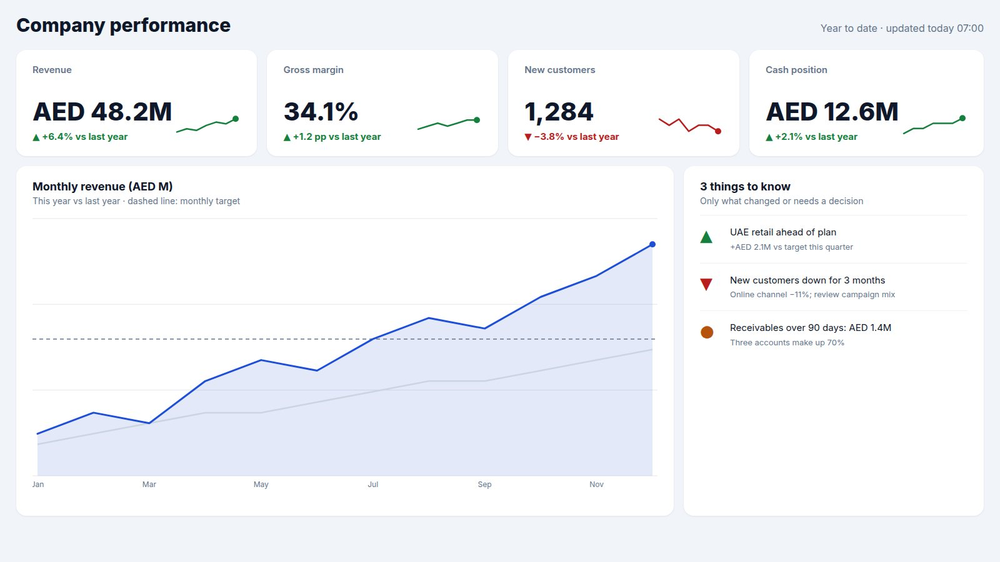
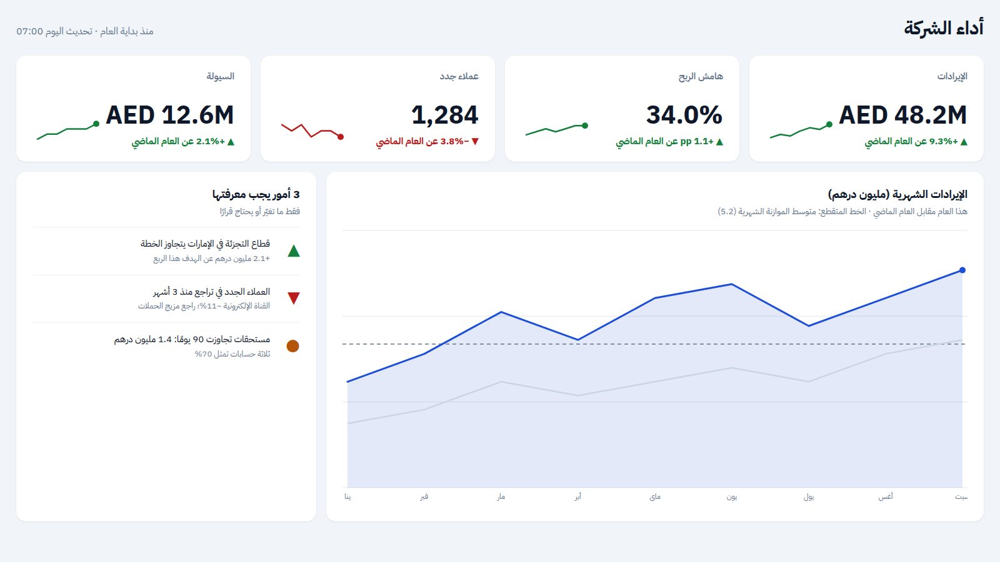
- Philosophy
- Answer “are we OK?” before the reader finishes their coffee.
- The reader’s question
- Are we on track, and is anything off?
- Signature
- 4–5 big KPIs, one trend against target, and only the exceptions.
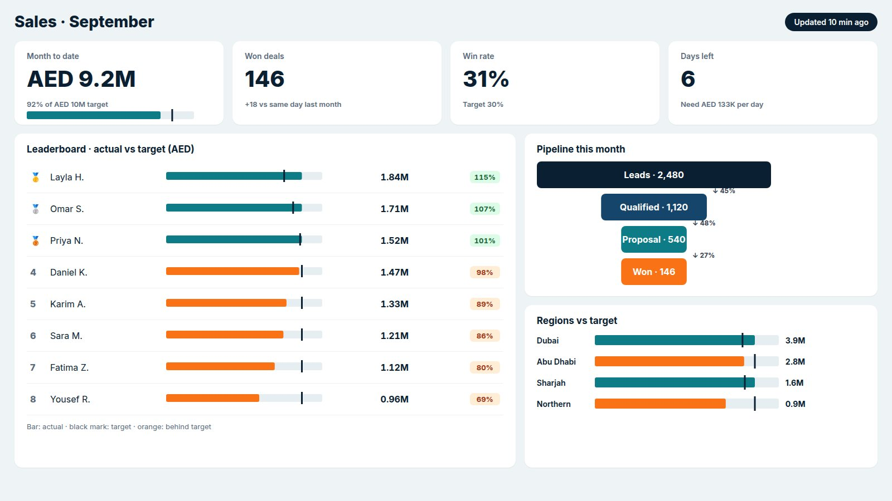
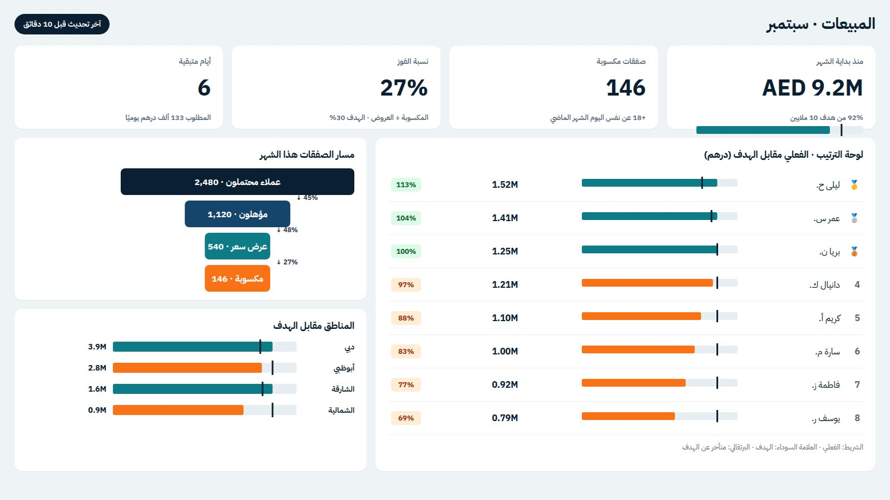
- Philosophy
- Show the gap to target, and who is closing it.
- The reader’s question
- Will we hit target this month, and who is winning?
- Signature
- Actual vs target everywhere, rankings, days left, a pipeline.
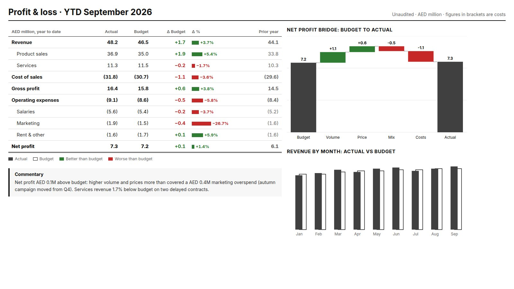
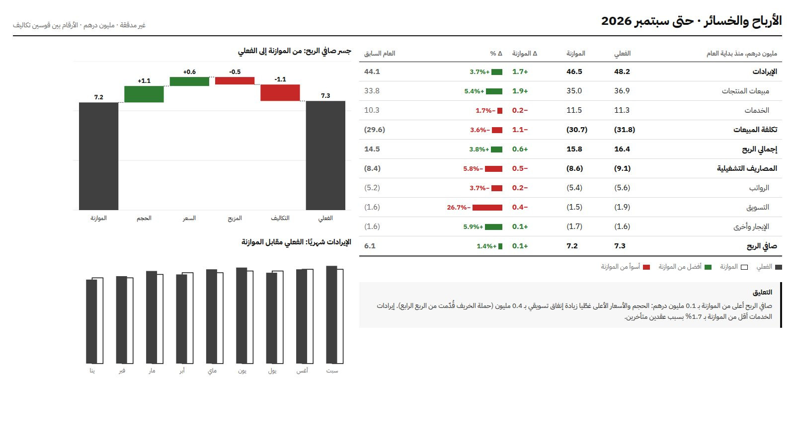
- Philosophy
- Precision first: every number in its place, every difference explained.
- The reader’s question
- Where exactly are we against budget, and why?
- Signature
- A P&L table with variances, a waterfall bridge, written commentary.
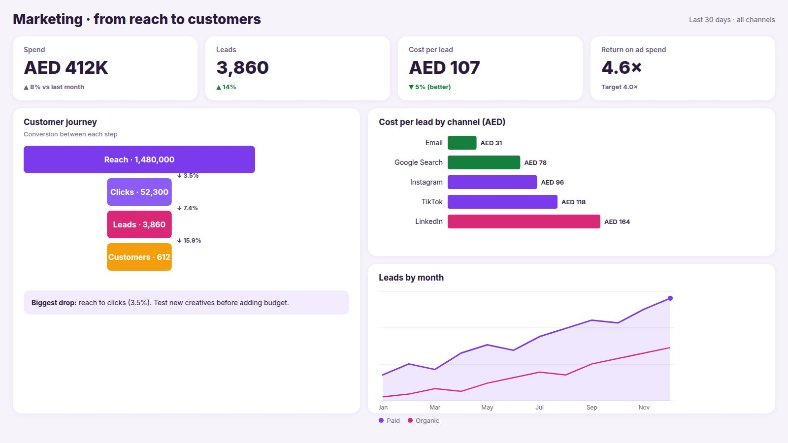
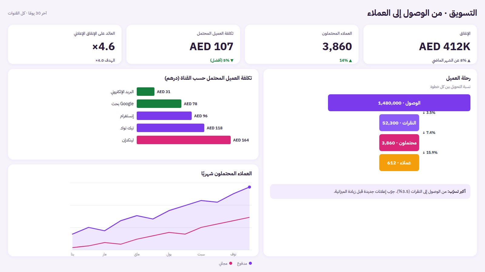
- Philosophy
- Follow the customer from first view to purchase, and price every step.
- The reader’s question
- Which channel brings customers, and at what cost?
- Signature
- A funnel with conversion rates, cost per lead by channel, trends by source.
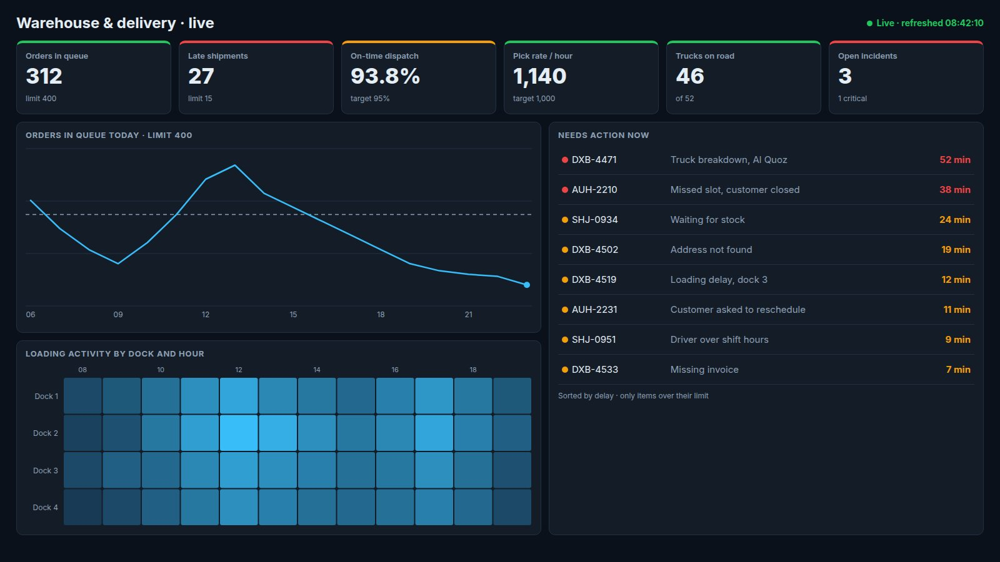
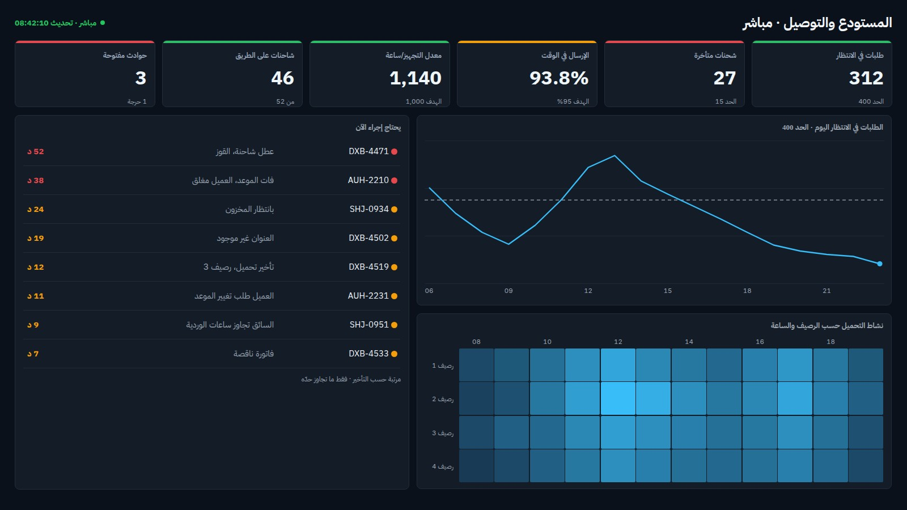
- Philosophy
- Silence when all is well, alarms when it isn’t.
- The reader’s question
- What needs action right now?
- Signature
- Status tiles with limits, live timestamps, an exception list sorted by urgency.
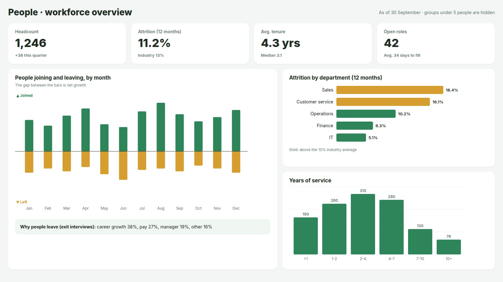
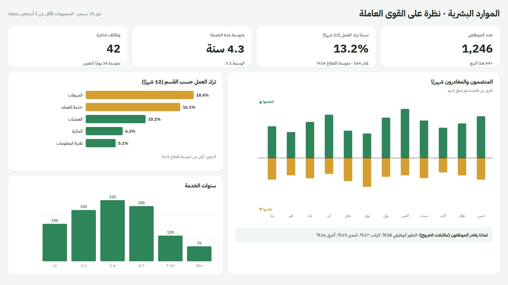
- Philosophy
- Show how the workforce is changing, without exposing individuals.
- The reader’s question
- How is our workforce changing, and where are we losing people?
- Signature
- Joiners vs leavers, attrition by team, tenure, and privacy rules.
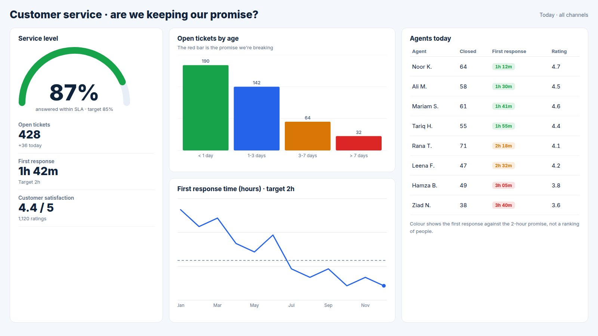
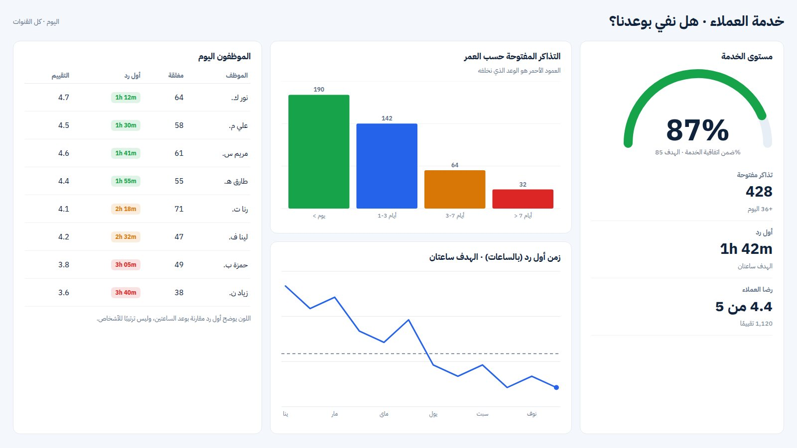
- Philosophy
- Measure the promise you made to customers, and the queue behind it.
- The reader’s question
- Are we keeping our promise to customers?
- Signature
- Service level against the promise, backlog by age, response time, agents.
Which style does your report need?
Three questions, ten seconds.
1 Executive: The 5-second report
Answer “are we OK?” before the reader finishes their coffee.
Executives don’t explore; they scan. Their report is a verdict, not a workshop. Every extra visual makes the one important number harder to find, so the discipline here is what you leave out.
- Big numbers with context: every KPI shows the change vs last year and a tiny trend, so “good or bad?” needs no second look.
- One trend, one target line, last year in grey. The eye sees in a second whether the year is above or below plan.
- “3 things to know”: written exceptions instead of ten more charts. Only what changed or needs a decision.
Do
- Five KPIs at most, each with a comparison (target, last year).
- Lots of white space and large type.
- A short written summary of what changed.
Avoid: Tables, slicers and drill-downs on the first page. Put them on a second page for the analysts.
2 Sales: The race
Show the gap to target, and who is closing it.
Sales is a race against the calendar. Every number only means something next to its target and the days left, and people are motivated by where they stand. Make the report feel like a scoreboard.
- Month to date with its target as a progress bar, plus days left and the daily amount needed. The question “will we make it?” is answered on top.
- A leaderboard with bullet bars: the bar is actual, the black mark is target, orange means behind. Ranking makes it personal.
- The pipeline shows where deals get stuck, with the conversion between each step.
- Regions against target with the same bullet bars, so one visual language runs through the page.
Do
- Month to date and quarter to date, never just totals.
- Rankings and progress to target per person or region.
- A refresh time on the page, because people act on it today.
Avoid: Pie charts of revenue by product. They show share, but sales people need progress.
3 Finance: The ledger
Precision first: every number in its place, every difference explained.
Finance readers trust tables more than charts, and they read every row. The design goal is calm order: aligned numbers, consistent formats, and a fixed notation so actual, budget and last year are never confused.
- The P&L as a table: actual, budget, variance and prior year, with small variance bars inside the table. Costs in brackets, totals with a double line, as on paper.
- A waterfall bridge from budget to actual: volume, price, mix and costs explain the difference in one picture.
- Actual is solid, budget is an outline. The same notation on every page, so nobody has to read a legend twice.
- Written commentary: the story behind the variance in two sentences. Finance reports are read, not glanced at.
Do
- One number format per report (AED million, one decimal).
- Right-aligned numbers and tabular figures so columns line up.
- Green and red only for better or worse than budget.
Avoid: Decoration: gradients, icons, 3D and rounded “friendly” cards make numbers look less reliable.
4 Marketing: The journey
Follow the customer from first view to purchase, and price every step.
Marketing is a chain of small conversions. A campaign can look great on reach and still waste money, so the design always connects spend to the next step and to customers, never to impressions alone.
- The customer journey as a funnel, with the conversion between steps. The biggest drop is where the money leaks.
- Cost per lead by channel, sorted, with the cheapest in green. It answers “where do I put the next dirham?”
- Leads by month, paid vs organic, to see whether growth is bought or earned.
Do
- Cost per lead and return on ad spend next to every volume number.
- One fixed colour per channel across all pages.
- A clear note of the biggest drop in the journey.
Avoid: Vanity metrics on top (impressions, likes). Show them, but below the numbers that cost money.
5 Operations: The control room
Silence when all is well, alarms when it isn’t.
Operations reports often live on a wall screen or a tablet, read in seconds from a distance. They are dense on purpose, but colour is reserved for one job: telling you what is over its limit.
- Every tile has its limit written under the number, and the coloured top edge shows the status. Late shipments are red because 27 is over the limit of 15.
- The queue through the day against its limit line. Supervisors see the peak coming, not just the current number.
- “Needs action now”: only items over their limit, sorted by delay. It’s a to-do list, not a report.
Do
- Thresholds on every number, visible on the page.
- A live refresh time, and automatic page refresh.
- Dark theme for wall screens, large text readable from 3 metres.
Avoid: Monthly totals and long trends here. They belong in a weekly review report, not the control room.
6 HR: The people map
Show how the workforce is changing, without exposing individuals.
HR data is about people, so the tone matters as much as the numbers. The design is calm, shows flows and groups rather than names, and never lets a small team be identified.
- Joiners above the line, leavers below: the gap is net growth. A flow tells more than a headcount number.
- Attrition by department against the industry average; only the teams above it get the highlight colour.
- The why behind the numbers, from exit interviews, written in one line.
Do
- Rates and flows (attrition %, joiners vs leavers), not lists of names.
- A privacy rule: hide groups smaller than 5 people.
- Benchmarks, so a number means something.
Avoid: Salary or performance details on shared pages. Use row-level security for anything personal.
7 Customer service: The queue
Measure the promise you made to customers, and the queue behind it.
Customers don’t care about averages; they care about their ticket. The design measures service against the promise (answered within 2 hours, closed within 3 days) and makes the oldest tickets impossible to miss.
- One big service level against its target, then the three numbers behind it: open tickets, first response and satisfaction.
- Open tickets by age, coloured from fresh to overdue. The red bar is the promise being broken.
- Agents compared with the promise, not with each other, so the page coaches instead of blaming.
Do
- Service level against a written target.
- Backlog by age, not just the total.
- Satisfaction next to speed, so speed never wins alone.
Avoid: Average handling time as the headline. It rewards rushing customers off the phone.
The 7 styles side by side
| Style | Reader | Time spent | Density | Colour rule |
|---|---|---|---|---|
| ExecutiveThe 5-second report | CEO, board, directors | 5–30 seconds | Very low | One brand colour; green and red only for status |
| SalesThe race | Sales managers and reps | 2–5 minutes, daily | Medium | Energetic accent; orange for “behind target” |
| FinanceThe ledger | CFO, controllers, finance team | 30–60 minutes, monthly | High, but ordered | Black and grey; green/red only for variance |
| MarketingThe journey | Marketing managers, agencies | 5–15 minutes, weekly | Medium | Brand colours per channel, kept the same everywhere |
| OperationsThe control room | Supervisors, shift leads, wall screens | Seconds, many times a day | High | Dark background; green, amber, red as signals |
| HRThe people map | HR leaders, department heads | 10–20 minutes, monthly | Low to medium | Calm, warm palette; one highlight colour for risk |
| Customer serviceThe queue | Service managers, team leads | Minutes, several times a day | Medium | Neutral base; colour by age and against the promise |
Sources and further reading
The books and standards behind these styles. The example pages are our own, with fictional data.
- Stephen Few, Information Dashboard Design: Displaying Data for At-a-Glance Monitoring (2nd edition, 2013).
- Edward Tufte, The Visual Display of Quantitative Information (1983): the data-ink idea behind removing decoration.
- Cole Nussbaumer Knaflic, Storytelling with Data (2015): titles that say what to see, and decluttering.
- Colin Ware, Information Visualization: Perception for Design: pre-attentive attributes.
- IBCS, International Business Communication Standards (ibcs.com): notation for actual, plan and variance.
- ANSI/ISA-101.01, Human Machine Interfaces for Process Automation Systems: high-performance operator screens.
One report, several styles
Real reports mix styles by page. A good pattern: an executive page first (the verdict), then one page per team in its own style (the detail), then a drill-through page for the analysts. Each page still answers one question for one reader.
Build your layout in minutes
Our free Power BI Theme & Layout Generator has layouts for executive summaries, analysis pages and operations monitors: pick one, set your brand colours, and download the theme, a matching background and the exact position of every visual.
This is the first article of a series. Next, each style gets its own deep dive: the exact layout, the DAX for its KPIs, the most common mistakes, and a checklist.